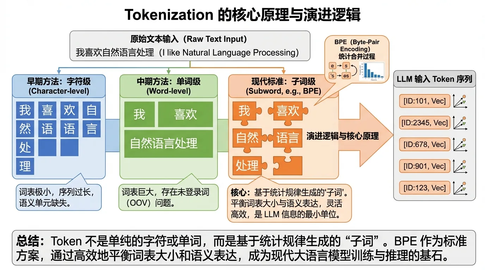
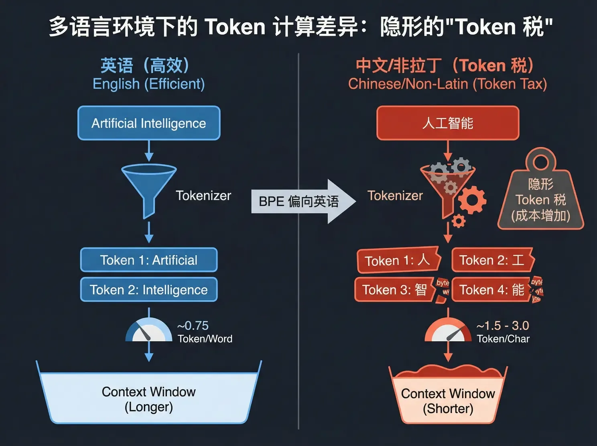

Token 怎么数：BPE 与隐形的「Token 税」
账单按 Token 结算，但 Token 到底是怎么数出来的？它既不是字符，也不是单词，而是基于统计规律生成的「子词」。理解这套规则，你才会明白：同样一句话，中文为什么天生比英文贵 2 倍。
早期 NLP 走过两个极端。词级别分词语义明确，但英语几十万个单词加上词形变化（look / looks / looking / looked），词表直接爆炸，还处理不了没见过的新词（OOV 问题）。字符级别分词什么词都拆得开，但序列太长、单个字符信息量太低，推理效率极差。
现代大模型选择了中间路线——子词分词（Subword Tokenization）：常见的词保留为完整 Token，不常见的词拆成有意义的片段。词表控制在 32k 到 200k 之间，既不爆炸，又什么都能表示。

GPT 系列、Llama 3 都用 BPE（Byte-Pair Encoding，字节对编码）。它的词表不是人工编的，而是从语料里「合并」出来的：
初始化：把语料库全部拆成最小单位（对 Unicode 文本先做 UTF-8 编码，以字节为单位）。
统计频次：数一数所有相邻字节对在语料库里出现的频率。
合并最频繁的一对：比如 "u" 和 "g" 经常相邻，就合并成新符号 "ug" 加入词表。
迭代：重复第 2、3 步，直到词表达到预设大小——Llama 2 是 32,000，GPT-4 的 cl100k_base 是 100,277。
推理时反过来查：常见词 "hug" 直接是一个 Token；生僻词 "bug" 拆成 ["b", "ug"] 两个。词表越大、你的文本越「常见」，Token 就越少，账单就越薄。这就是为什么 GPT-4 换用 10 万词表后，还专门把多层缩进的空格序列并成单一 Token——代码生成的效率直接翻了几倍。

主流模型的 Tokenizer 训练语料以英文为主，BPE 学到的合并规则高度偏向英语词汇。结果是：非拉丁语系（中文、日文、韩文）在 Token 化时面临严重的效率劣势，业界称之为「Token 税」。
| 语言 | 示例 | Token 数 | 比率 | 现象解释 |
|---|---|---|---|---|
| 英语 | Donald John Trump | 3 | ~0.75 Token/词 | 常见单词直接映射为 1 个 Token |
| 中文 | 唐纳德·约翰·特朗普 | 6 | ~1.5 – 2.5 Token/字 | 常见字是 1 个 Token，生僻字被拆成 2–3 个字节 Token |
| 韩语 | 도널드 존 트럼프 | 7 | ~1.5 – 3.0 Token/字 | 编码空间覆盖不足，经常回退到字节编码 |
表达同样的语义，中文用户要消耗比英文用户多 2 倍以上的 Token：既多付了 API 的钱，又变相缩短了上下文窗口。

点选一句话，对比它的中英文版本各要消耗多少 Token（按典型比率估算）。想看精确切分，去 OpenAI Tokenizer 亲手试。
英文有天然的护栏：BPE 合并前先按空格预分词，合并只发生在单词内部，Token 边界基本符合语言学直觉。中文没有空格，BPE 只能完全依赖统计共现频率来决定边界——一段文本（哪怕是一句毫无逻辑的广告语）在语料里重复出现千万次，BPE 就会把它整个合并成一个「不可分割的最小语义单元」。
最有名的例子是「给主人留下些什么吧」：这句网络博客时代的高频留言，在 GPT 的词表里被强行合并成了独立 Token，成了著名的「故障 Token」。这不是段子，是 BPE 统计逻辑的必然产物。

Token 是统计出来的子词，不是字符也不是单词。BPE 按语料频率迭代合并，词表大小是超参数。
中文天生要交 Token 税：同样语义比英文多花 2 倍以上，还变相缩短上下文窗口。估算预算时别按英文经验拍脑袋。
词表决定压缩率。cl100k_base 十万词表 + 空格合并优化，是 GPT-4 代码效率高的直接原因。选模型时 Tokenizer 效率也是成本参数。
内容来源：整理自作者团队内部分享《AI Token 降本增效策略分享》第一部分「Token 的构成」。BPE 细节可参考 OpenAI Tokenizer 与 tiktoken 开源库。想复习分词和词表的底层原理，回看大模型原理 · 词表与训练。